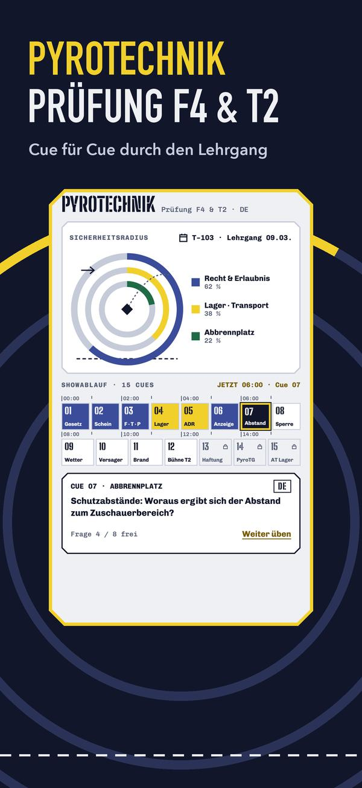
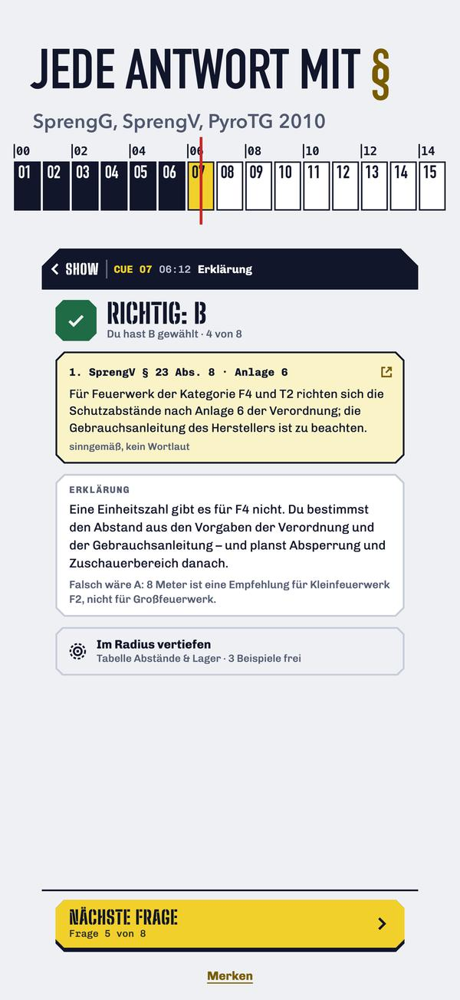
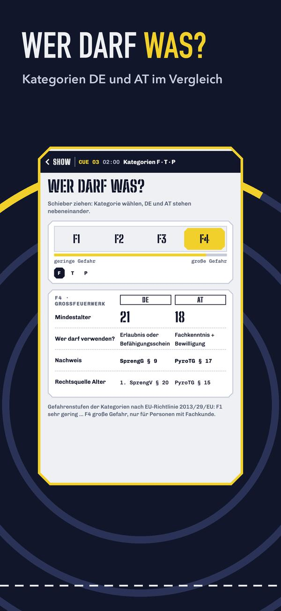

Pyrotechnik Prüfung F4 & T2
Feuerwerk Fachkunde & Bühne
Einmalkauf – kein Abo. Pyrotechnik Prüfung F4 & T2 begleitet dich durch den Grundlehrgang für Großfeuerwerk (F4) oder Bühnenpyrotechnik (T2) – in Deutschland und Österreich. Lerne Recht, Erlaubnis, Kategorien, Lagerung, Transport, Abbrennplatz, Absperrung und das Verhalten bei Versagern Cue für Cue wie in einem Showablauf.



- 620 eigene Fragen: Deutschland 400, Österreich 220
- 15 Themen vom Sprengstoffgesetz bis zum Versager
- Jede Antwort mit Erklärung und § aus SprengG, SprengV oder PyroTG 2010
- 10 Probeprüfungen im eigenen Übungsformat
- Kategorien F, T und P: Deutschland und Österreich im Vergleich
- Tabellen zu Abständen, Lagergruppen und ADR Klasse 1
- Lehrgangstermin-Countdown und Widget
- Offline und ohne Konto, Fortschritt per iCloud
Bald im App Store
Hilfe · Datenschutz